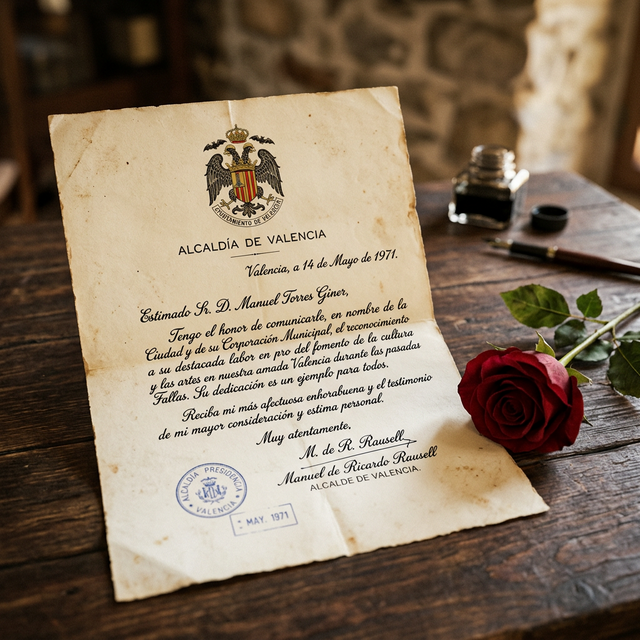

Dibujos e Imágenes



La Invitación del Alcalde
Cuando Paz Arés Osset era una niña, recibió una carta que marcaría su vida social en la ciudad. El alcalde de Valencia, reconociendo su gracia y potencial, la invitó personalmente a formar parte de la Cort d'Honor de la Regina dels Jocs Florals.
Este festival, de inmensa relevancia cultural, honraba las tradiciones más profundas de Valencia, reuniendo a las familias más destacadas en actos llenos de solemnidad y belleza.
Crónica de la Festividad
El programa comenzó el 28 de julio de 1971 con una cena de gala en el Restaurant Viveros. Paz, con su elegancia natural, brilló entre las damas de honor mientras la Regina era presentada oficialmente.
El 30 de julio, la jornada continuó con la bendición en la Basílica de la Verge dels Desemparats. Un acto de profunda espiritualidad y tradición que culminó en un almuerzo de honor.
Esa misma noche, la ciudad se vistió de gala para el baile en la Societat Hípica Valenciana. Fue aquí donde Paz lució con orgullo el traje tradicional de valenciana, una obra de arte en seda y bordados que simboliza la identidad de su tierra.
El broche de oro lo puso la Batalla de Flores el 31 de julio, un estallido de color y fragancia donde la Reina y su corte recorrieron las calles en carrozas engalanadas, celebrando la alegría de la vida valenciana.